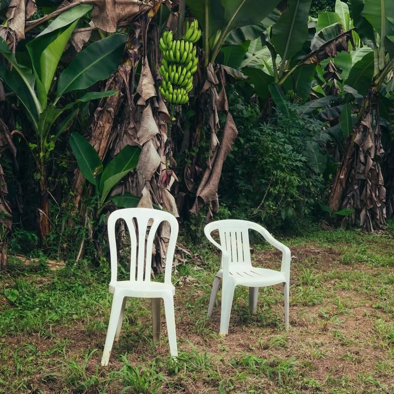
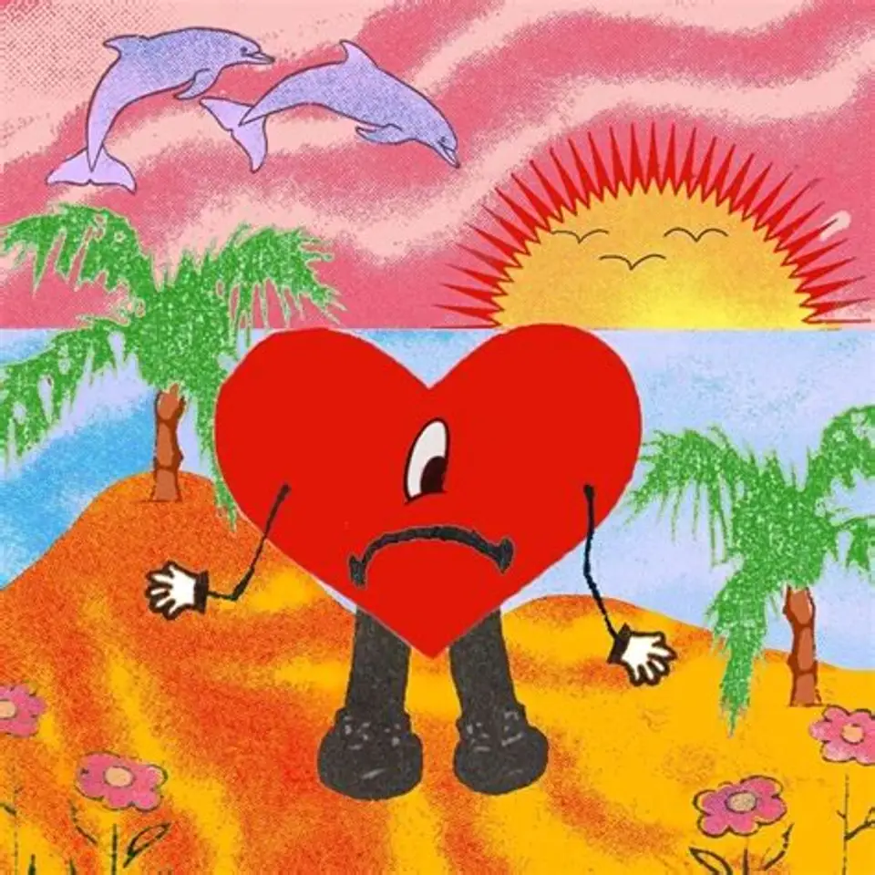

Artist profile
Bad Bunny
Bad Bunny (real name Benito Antonio Martínez Ocasio) is a Puerto Rican singer and rapper from Vega Baja. He is one of the biggest names in Latin music, known for mixing reggaeton and Latin trap.
Listen and explore
Albums
Choose a preview below
-

DeBÍ TiRAR MáS FOToS DtMF -

Un Verano Sin Ti Titi Me Preguntó